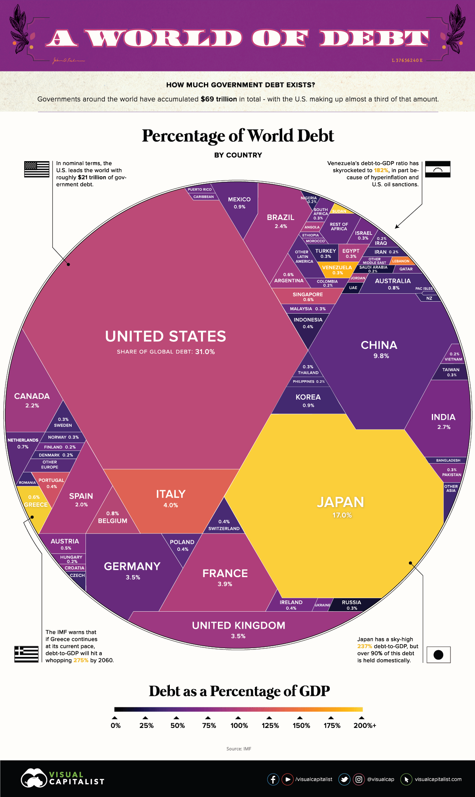
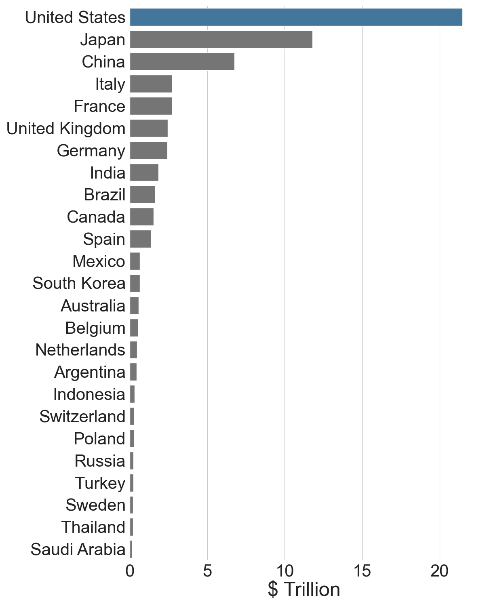
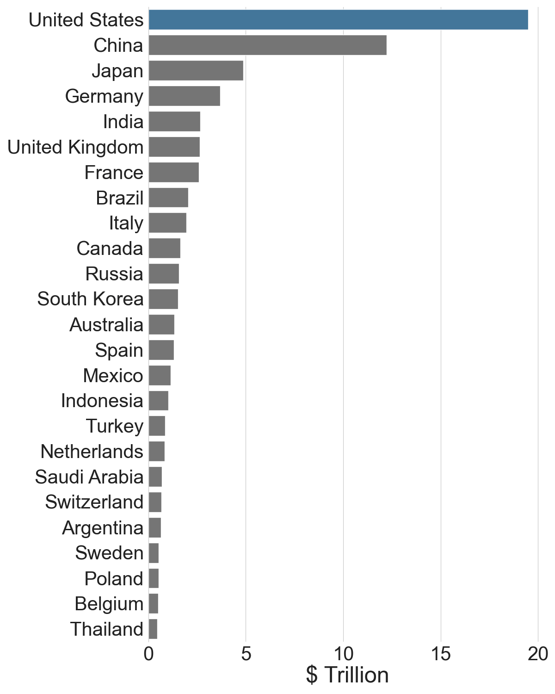
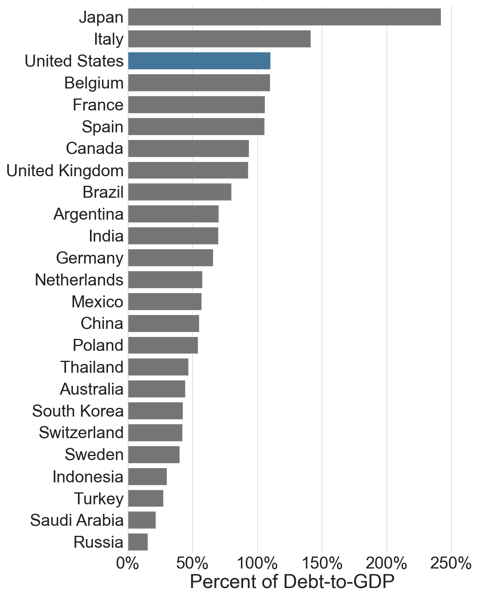
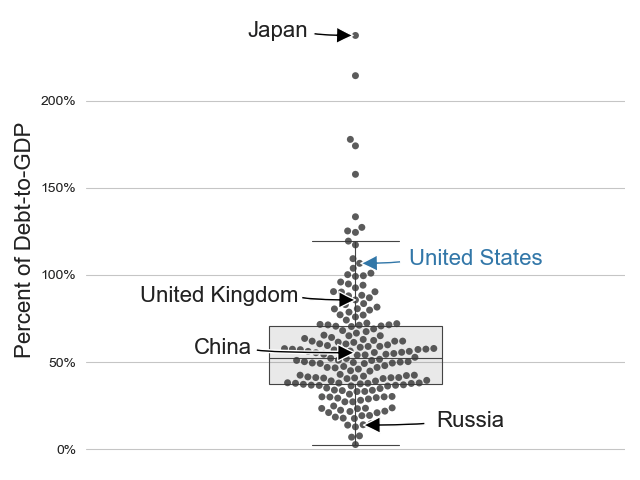

Critiquing and Redesigning The Visual Capitalist's World Debt Trapezoid Chart
Although an aesthetically interesting geometric design, it doesn't tell us much about world debt
skip to redesign  >> link to sourceCritiquing the Trapezoid Chart
Pie Charts
Data visualization designers discourage pie charts because it is difficult to visually compare the volumes of different slices of pie. For example, it can be difficult to discern a slice that accounts for 30% of the pie from a slice comprises 25%.
Pie charts are only recommended when you have a few categories (slices) and are trying to convey a simple message, like Olivia owns 51% of the company's shares.
Trapezoid Charts
If it is bad practice to have a pie chart with a lot of slices, then certainly, a pie filled with 188 trapezoids, triangles, and octagons is poor data visualization design. It is difficult to compare the volume of a triangle to a trapezoid to an octagon.
Color
When using a color-ramp to represent a range of values, it is recommended to choose a single hue. A popular choice is the color red. Lighter-reds representing lower values and darker-reds representing higher values.
In the Visual Capitalist's graphic, I can recognize three different colors: yellow, purple, and orange. Yellow does not intrinsically represent a higher value than purple. The addition of color to this graphic only adds to the confusion created by the trapezoids.
The Data Story
I believe the Visual Capitalist's graphic is attempting to tell the following story: 1. there is a lot of debt in the world; 2. the United States holds the most debt; 3. Japan has the highest debt-to-gdp ratio.
- The graphic shows there is a lot of debt in the world; however, besides displaying that the US, Japan, and China hold the most debt-- the additional trapezoids do not provide any more information because they are difficult to visually compare.
- I am able to identify that the United States holds the most debt, in spite of (not because of) it being represented by an undefined shape.
- Japan's yellow Pac-Man does not intrinsically convey a markedly higher debt-to-gdp ratio than China's purple octagon.
Redesigning the Trapezoid Chart
Small Multiples
At the heart of quantitative reasoning is a single question: Compared to what? Small multiple designs, multivariate and data bountiful, answer directly by visually enforcing comparisons of changes, of the differences among objects, of the scope of alternatives.
Inspired by Tufte, I use three bar charts to compare the United States' debt, gpd, and debt-to-gdp ratio to the top twenty-five world economies. Following, I use a beeswarm plot to compare the debt-to-gdp ratio for 188 countries in a single data visualization.
Comparing the United States' Fiscal Position to the Top 25 World Economies
The United States Has The Most Debt
 >> dataThe United States Has The Largest GDP
 >> dataThe U.S. Does Not Have The Greatest Debt-to-GDP Ratio
 >> dataThe United States' Debt-to-GDP Ratio Is Not An Outlier
Comparing debt-to-gdp for 188 countries using a beeswarm plot

- every bee (circle) represents a country's debt-to-gdp ratio
- the vertical position of a bee represents the magnitude of the ratio; the higher the bee the greater the ratio
- the horizontal position represents how many other countries have a similar ratio
- the box represents a range of values from the 25th percentile to the 75th percentile, or the middle 50% of the data; also called the interquartile range (IQR)
- the top and bottom whiskers mark the highest and lowest 25% of the data
- bees that fall outside the whiskers are outliers--they have a ratio that is greater than 1.5*IQR
Code
View the Python code and data on my github:
github.com/dan-dewitz/visualizing-world-debt
Contact Us
Location:
Fayetteville, Arkansas
Email:
dewitz.dan@gmail.com
Call:
507-327-2658